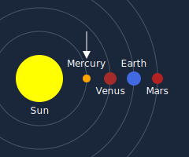

Chapter 7: The Structure of An Atom
ATOMIC STRUCTURE
We will begin this discussion of atomic structure by considering what constitutes an electrical charge. If we observed a balanced atom we would find it had no charge, yet if we removed particles (electrons) from that balanced atom it would result in that atom now having a positive charge. If we were instead to add electrons to that balanced atom, it would result in that atom now showing a negative charge. Therefore, an electrical charge (negative or positive) is the result of adding or subtracting particles from an atom. Since all falling bodies follow the same laws of nature (be that body subatomic, atomic, universal, or anything in between) It is clear that a single particle cannot carry an electrical charge. When members of the scientific community extract so called particles with the aid of their accelerators and confidently proclaim these "particles" to be either negative, positive, or neutral in value, they have either confused their terminology, or have confused the issue, we're not sure which, but regardless, the fact remains that these charged "particles" are in reality systems of particles. If they weren't, they wouldn't be capable of carrying any charge whatsoever.
Basic high school science courses teach that an electron is a very small particle which has a negative charge, but this is incorrect. What is perceived as an electron is actually a system of particles. It is perceived as carrying a negative charge due to its very small size relative to the nucleus it orbits. The bubble of extracted energy which surrounds an electron system is smaller than the bubble generated by the atomic nucleus, and so can be said to be negative in respect to the nucleus.
The same proves true when dealing with "particles" from the nucleus of an atom. For example, scientists "smash" a nucleus and excitedly announce they've found mesons, which are supposedly particles similar to an electron except that they can carry negative, positive, or neutral charges, and are various sizes. Again, what they have found are not single particles, but are systems of particles. To our knowledge, science has yet to identify a single particle, and who could say If anyone would recognize it even if they did find one.
Unity dictates that all bodies and systems follow the same basic rules, and so the arrangement and inner workings of subatomic systems can be compared to the falling body of our solar system. Our purpose is always to allow the reader to gain an understanding of physical law, so for the sake of clarity we will draw analogies between subatomic systems and our solar system, and will now focus attention on a simple electron system, which is comparable to the planet Mercury
Mercury

.
When looking at Mercury we see its rotation and orbit are very fast compared to the more distant planets. Orbiting Mercury are small chunks of debris which are too small to be classified as moons per se, however, they perform the same function and serve to balance the system. A simple electron system behaves in much the same way in that its orbit and rotation are faster than more distant electron systems, while its size and the sizes of its orbiting bodies are also smaller than more distant electron systems. It must be remembered that each system of particles, no matter how simple or complex, produces a force of extracted energy that creates a gravitational field (bubble) which draws all particles (bodies) within its field toward its center. At the same time, the orbiting particles (bodies) generate their own fields (bubbles) which in turn repels the primary gravitational field through which they fall. A simple electron system is illustrated in figure 29.
![Diagram of two circles, one within the other. The smaller circle has a diameter of about 1 cm. The outer circle is about 6cm in diameter. Contained in the larger circle at approx the 11 o'clock and the 5 o'clock position two smaller circles (about 0.5 cm diam.) are drawn respectively. Within each smaller circle is a dot in the middle. Arrows protruding out from these smaller 0.5 cm circles indicate they are travelling counter clockwise. The 1 cm, and both DOTS inside the 0.5 cm circles are labelled 'Particles'. The outer circle is labelled 'Electron'. The 0.5 cm circles and the outer 6cm circle are labelled 'Bubbles'.](./img/fig29.jpg)
Fig. 29
We could break this simple system down yet further, but at this time It would likely just cause confusion to the reader unnecessarily. For now it is enough if we've managed to explain two major points. First, the sun is not in the process of burning out, as is currently taught, but rather is continually building mass, and is therefore growing larger every day. Secondly, it should be realized that these hydrogen implosions are nature's way of attempting to replace imbalance with balance, and so in a very limited sense, hydrogen fusion is a thing of nature.
A complex electron system could be likened to the planet Jupiter with its many moons. A complex electron system, as shown in figure 30, is slower in both its rotation and its orbit as compared with a simple electron system, and will be found in the outermost orbits of the atom. Regardless of these differences, however, it operates on the same principles of attraction/repulsion as does a simple electron system, or any other system.

Fig. 30
We haven't undertaken to name any of these particles, as it would be a vain exercise. The particles found in an electron system are the same type of bodies found in neutrons and protons, as will be seen in the next section. They differ in size and in their orbits, as do the planets in our solar system, but they all maintain their orbits due to the same Interaction between the attraction/repulsion of their respective gravitational fields.